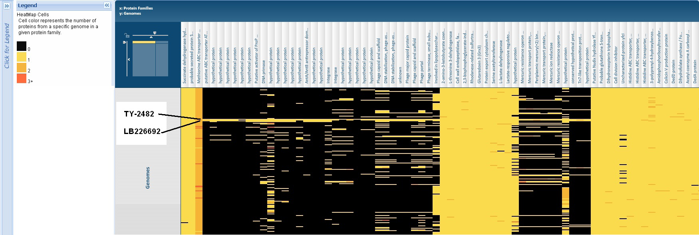

E. coli outbreak: New Comprehensive Comparisons¶
An outbreak of Escherichia coli causing a severe illness called hemolytic-uremic syndrome (HUS) began in Germany in May 2, 2011 and has killed more than 20 people and sickened more than 2,000. The organism causing the outbreak has been identified as a strain of E. coli O104:H4 that produces a Shiga toxin and causes an illness similar to infection with E. coli O157:H7. Two isolates from this outbreak have been sequenced. Both strains, TY-2482 (sequenced by the Beijing Genomics Institute in collaboration with University Medical Centre Hamburg-Eppendorf with 12X coverage from IonTorrent PGM: assembly) and LB226692, (sequenced by Life Tech in collaboration with the University of Muenster with 28X coverage from IonTorrent PGM: assembly) have been annotated and are now available at PATRIC Bioinformatics Resource Center.
The two genomes have been annotated using RAST, making them consistent with the 184 E. coli genomes and the total 2,865 bacterial genomes available at PATRIC. The proteins conserved across all E. coli have been used to generate a preliminary phylogenetic tree that is based on 166640 characters across 527 genes in 354 taxa. This tree, shown below shows that the two new strains are most closely related to the pathogenic, enteroaggregative strain 559899.
Click Image to enlarge.
Click here to view this tree in its interactive form on the PATRIC Website.
The proteins from these two new pathogenic strains can be compared to other bacterial genomes using the PATRIC Protein Family Sorter. An example of this, showing two of several unique islands that have been identified in these two genomes is provided in the figure below and in interactive form on the PATRIC Website by clicking here and then selecting the “Heatmap” tab.
See the Protein Family Sorter
FAQs for help in using the
sorter. An Excel file with tabs containing lists of proteins in these
islands is available by clicking E coli protein islands.

Click Image to enlarge.
For a comparison of the RAST annotations with the other publicized annotation click here.
Much of the information in PATRIC is updated on an ongoing basis. Such as:
Interactive Disease maps with outbreak information. Click here and then select the Disease Map tab.
The PATRIC Google news search for countermeasures and other information. Click here.
Many laboratories are analyzing these genomes and providing data to the research community. PATRIC is performing additional analyses, including collecting a list of the important genes identified, and will be providing gene trees and multiple sequence alignments of the genes with their closest homologs, which we will release as additional news items. For updates:
Check the PATRIC News Page.
Follow us on Twitter.
Follow us on Facebook.
For quarterly PATRIC updates on current PATRIC and PATRIC-related research, new PATRIC functionality, and PATRIC grant opportunities, please sign up for our PATRIC Newsletter.